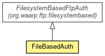

org.waarp.ftp.simpleimpl.file
Class FileBasedAuth
java.lang.Object
 org.waarp.common.file.filesystembased.FilesystemBasedAuthImpl
org.waarp.ftp.filesystembased.FilesystemBasedFtpAuth
org.waarp.ftp.simpleimpl.file.FileBasedAuth
org.waarp.common.file.filesystembased.FilesystemBasedAuthImpl
org.waarp.ftp.filesystembased.FilesystemBasedFtpAuth
org.waarp.ftp.simpleimpl.file.FileBasedAuth
- All Implemented Interfaces:
- org.waarp.common.file.AuthInterface, FtpAuth
public class FileBasedAuth
- extends FilesystemBasedFtpAuth

FtpAuth implementation based on a list of (user/password/account) stored in a xml file load at
startup from configuration. Not to be used in production!
- Author:
- Frederic Bregier
| Fields inherited from class org.waarp.common.file.filesystembased.FilesystemBasedAuthImpl |
isIdentified, password, rootFromAuth, session, user |
| Methods inherited from class org.waarp.common.file.filesystembased.FilesystemBasedAuthImpl |
getAbsolutePath, getBusinessPath, getRelativePath, getSession, getUser, isIdentified, setIsIdentified, setPassword, setUser |
| Methods inherited from class java.lang.Object |
clone, equals, finalize, getClass, hashCode, notify, notifyAll, toString, wait, wait, wait |
| Methods inherited from interface org.waarp.common.file.AuthInterface |
getBusinessPath, getRelativePath, getSession, getUser, isIdentified, setPassword, setUser |
FileBasedAuth
public FileBasedAuth(FtpSession session)
- Parameters:
session -
businessClean
protected void businessClean()
- Specified by:
businessClean in class org.waarp.common.file.filesystembased.FilesystemBasedAuthImpl
setBusinessUser
protected org.waarp.common.command.NextCommandReply setBusinessUser(String user)
throws org.waarp.common.command.exception.Reply421Exception,
org.waarp.common.command.exception.Reply530Exception
- Specified by:
setBusinessUser in class org.waarp.common.file.filesystembased.FilesystemBasedAuthImpl
- Parameters:
user - the user to set
- Returns:
- (NOOP,230) if the user is OK, else return the following command that must follow
(usually PASS) and the associated reply
- Throws:
org.waarp.common.command.exception.Reply421Exception - if there is a problem during the authentication
org.waarp.common.command.exception.Reply530Exception - if there is a problem during the authentication
setBusinessPassword
protected org.waarp.common.command.NextCommandReply setBusinessPassword(String password)
throws org.waarp.common.command.exception.Reply421Exception,
org.waarp.common.command.exception.Reply530Exception
- Set the password according to any implementation and could set the rootFromAuth. If NOOP is
returned, isIdentifed must be TRUE. A special case is implemented for test user.
- Specified by:
setBusinessPassword in class org.waarp.common.file.filesystembased.FilesystemBasedAuthImpl
- Parameters:
password -
- Returns:
- (NOOP,230) if the Password is OK, else return the following command that must follow
(usually ACCT) and the associated reply
- Throws:
org.waarp.common.command.exception.Reply421Exception - if there is a problem during the authentication
org.waarp.common.command.exception.Reply530Exception - if there is a problem during the authentication
setBusinessAccount
protected org.waarp.common.command.NextCommandReply setBusinessAccount(String account)
throws org.waarp.common.command.exception.Reply421Exception,
org.waarp.common.command.exception.Reply530Exception
- Set the account according to any implementation and could set the rootFromAuth. If NOOP is
returned, isIdentifed must be TRUE.
- Specified by:
setBusinessAccount in class FilesystemBasedFtpAuth
- Parameters:
account -
- Returns:
- (NOOP,230) if the Account is OK, else return the following command that must follow
and the associated reply
- Throws:
org.waarp.common.command.exception.Reply421Exception - if there is a problem during the authentication
org.waarp.common.command.exception.Reply530Exception - if there is a problem during the authentication
isBusinessPathValid
public boolean isBusinessPathValid(String newPath)
setBusinessRootFromAuth
protected String setBusinessRootFromAuth()
throws org.waarp.common.command.exception.Reply421Exception
- Specified by:
setBusinessRootFromAuth in class org.waarp.common.file.filesystembased.FilesystemBasedAuthImpl
- Throws:
org.waarp.common.command.exception.Reply421Exception
isAdmin
public boolean isAdmin()
Copyright © 2009-2012 Waarp. All Rights Reserved.